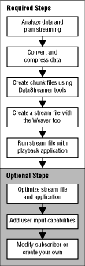

Preparing a streaming application consists of several steps. The figure below gives an overview of the steps.

Figure 1: Steps in creating an application that uses data streaming.
Here's a bit more detail about each step shown in the figure:
Analyze your data and plan how to stream them. Memory, I/O, and processor bandwidth limitations require trade-offs. For example, you can't play full-screen software-compressed video and CD-quality stereo audio at the same time. See Analyzing data and making trade-offs.
After initial verification of your data, you may want to modify streaming according to your needs. This can include the following:
Optimize the stream file and the application, making trade-offs where needed. Use tools for examining stream files and the tracing facilities for optimum use of bandwidth and other resources. See Debugging and Optimization.